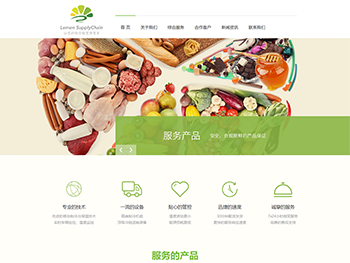
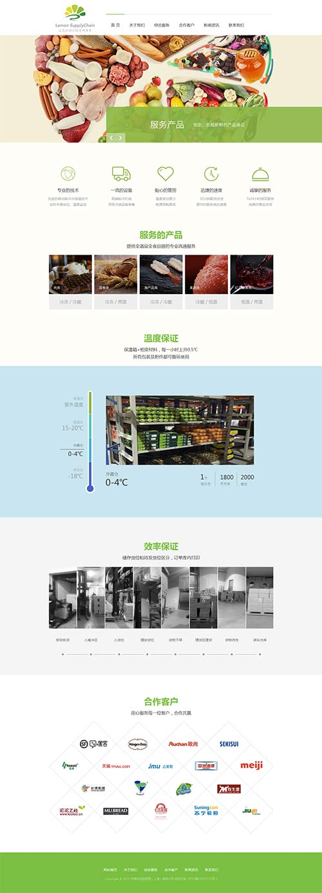

柠檬供应链官网
网址：http://lemonscm.cn/index.html
服务内容：网站策划+原型UI设计及开发+内容策划+新闻宣传+SEO
客户痛点：如何将业务和优势全方位、精准的展示出来，并吸引客户能立即下单。
策划解析：通过实地走访，深入冷库参观了解，发现柠檬供应链在行业内做得非常专业，温控分区、恒温控制、产品分类方面最大化的考虑到了他的客户需求。于是，设计方案重在突出其核心优势，用直观的方式展现服务的产品、温度如何区隔、客户一眼就能看明白自己的需求在什么位置，快速的下单。整体色调结合行业特性，简洁，绿色环保、但又给客户一种温馨的感觉
